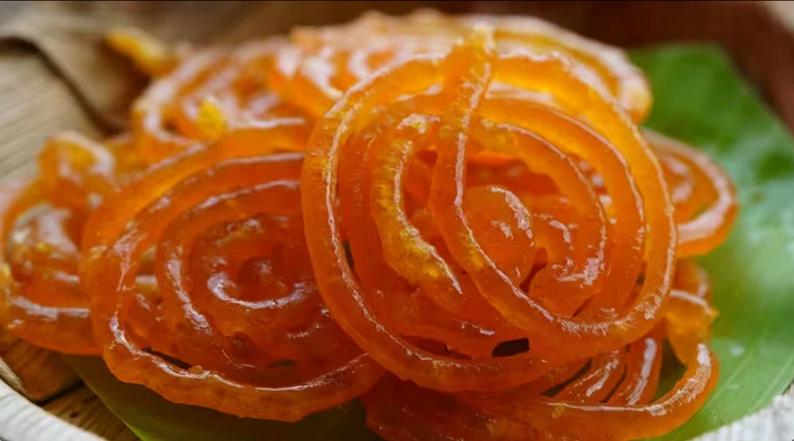

Welcome to your go-to kitchen companion! Whether you're a seasoned chef or just starting your cooking journey, these recipe cards are designed to make preparing delicious meals easy, fun, and inspiring.
Explore handpicked recipes, simple ingredients, and step-by-step instructions — all served with a pinch of love.
Let’s Cook Something Delicious!
1. Rasmalai
Preparation Time: 30 minutes
Cooking Time: 45 minutes
Servings: 4–6 people
Yield: ~12 Rasmalai pieces
Ingredients List:
🟡 For the Rasgullas (Paneer Balls):
1 liter full cream milk (for making chenna/paneer)
2 tablespoons lemon juice or vinegar (diluted with 2 tbsp water)
4 cups water (for boiling)
1 cup sugar (for syrup)
🥛 For the Ras (Sweetened Milk):
1 liter full cream milk
5–6 tablespoons sugar (adjust to taste)
¼ teaspoon cardamom powder (elaichi)
8–10 saffron strands (soaked in 1 tbsp warm milk)
10–12 chopped pistachios 10–12 chopped pistachios
10–12 chopped almonds
1 teaspoon rose water or kewra water (optional, for aroma)
Step-by-Step Procedure:
Step 1: Make Chenna (Fresh Paneer)
Boil Milk: Heat 1 liter full cream milk in a pan until it comes to a boil.
Curdle the Milk: Lower the flame and add 2 tbsp lemon juice (diluted with 2 tbsp water), a little at a time, until the milk curdles completely.
Strain and Rinse: Pour through a muslin cloth or fine sieve. Rinse the chenna (curds) with cold water to remove lemony taste.
Drain Water: Squeeze out excess water and hang the cloth for 30–45 minutes to drain completely.
Step 2: Knead & Shape Rasgullas
Knead: Place the drained chenna on a plate and knead it for 8–10 minutes until smooth and soft.
Shape Balls: Make 12 small, smooth balls, flatten them slightly into disc shapes (they will expand while cooking).
Step 3: Cook Rasgullas
Prepare Sugar Syrup: In a wide pan, boil 1 cup sugar with 4 cups water. Stir until sugar dissolves.
Add Discs: Drop the chenna discs into the boiling syrup.
Cook Covered: Cover and cook on high flame for 15 minutes. The rasgullas will double in size.
Cool Down: Turn off heat and let them cool in the syrup.
Step 4: Prepare the Ras (Flavored Milk)
Boil Milk: In another pan, boil 1 liter full cream milk. Simmer until it reduces to about ¾ quantity.
Flavor: Add following items:-
5–6 tbsp sugar
¼ tsp cardamom powder
Saffron strands soaked in warm milk
Chopped almonds & pistachios
Simmer: Cook for another 10–15 minutes until slightly thickened.
Cool: Let the milk cool to room temperature, then chill in the refrigerator.
Step 5: Combine & Serve
Squeeze Rasgullas: Gently press each rasgulla to release extra syrup
Soak in Ras: Add them into the chilled flavored milk (ras).
Chill Before Serving: Refrigerate for 2–4 hours before serving.
2. Gulaab Jamun
Preparation Time: 25 minutes
Cooking Time: 30 minutes
Servings: 4–6 people
Yield: ~12–14 Gulab Jamuns
Ingredients List:
🟤 For the Dough (Jamuns):
1 cup khoya (mawa, unsweetened, grated or crumbled)
2 tablespoons all-purpose flour (maida)
2 tablespoons milk (adjust as needed, for kneading)
¼ teaspoon baking soda
1 teaspoon semolina (suji/rava) – optional, for texture
A pinch of cardamom powder (optional)
Ghee or oil – for deep frying
🍯 For the Sugar Syrup:
1½ cups sugar
1½ cups water
3–4 cardamom pods (lightly crushed)
A few saffron strands (optional)
1 teaspoon rose water or kewra essence (for aroma)
1 teaspoon lemon juice (prevents crystallization)
Step-by-Step Procedure:
Step 1: Prepare the Sugar Syrup
Boil Water & Sugar: In a wide pan, mix 1½ cups sugar and 1½ cups water. Heat over medium flame until it comes to a boil
Flavor: Add 3–4 crushed cardamom pods, a few saffron strands (optional), and 1 tsp rose water or kewra essence.
Simmer: Let it simmer for 5–7 minutes to slightly thicken (it should be sticky, not thread-like).
Prevent Crystallization: Add 1 tsp lemon juice, mix well, and turn off the flame. Keep syrup warm but not boiling.
Step 2: Make the Dough
Mix Ingredients: In a bowl, combine:
1 cup khoya (grated)
2 tbsp all-purpose flour
¼ tsp baking soda
1 tsp semolina (optional)
A pinch of cardamom powder (optional)
Knead: Gently knead the mixture with 2 tbsp milk, adding a little at a time, until it forms a soft, smooth, slightly sticky dough. Don’t over-knead or it will become hard.
Rest: Cover and let it rest for 10 minutes
Step 3: Shape the Balls
Form Balls: Divide the dough into 12–14 equal parts and roll them into smooth, crack-free balls (you can slightly oil your hands).
Step 4: Fry the Jamuns
Heat Ghee or Oil: In a deep pan, heat ghee or oil on low to medium heat. It should be hot but not smoking.
Test First Ball: Drop one ball. If it slowly rises and turns golden evenly, the oil is ready
Fry in Batches: Gently slide in the rest of the balls and fry on low flame, stirring gently for even browning. This takes 6–8 minutes.
Remove: Once golden brown, drain on paper towel.
Step 5: Soak in Sugar Syrup
Add to Syrup: Immediately transfer the hot fried balls into warm (not hot) sugar syrup.
Soak: Let them soak for at least 2 hours. They will swell and become juicy.
Step 6: Serve
Serve warm or chilled, garnished with chopped nuts or a few saffron strands.
3. Jalebi

Preparation Time: 10–12 hours (for fermentation)
Cooking Time: 25 minutes
Servings: 4–5 people
Yield: ~15–18 jalebis
Ingredients List:
🟠 For the Jalebi Batter:
1 cup all-purpose flour (maida)
2 tablespoons cornflour
½ teaspoon baking powder (or a pinch of baking soda)
¾ cup water (adjust as needed to get pouring consistency)
1 tablespoon yogurt (curd)
A pinch of turmeric powder (for color) or a few drops of orange/yellow food color
Ghee or oil, for deep frying
🍯 For the Sugar Syrup:
1 cup sugar
½ cup water
¼ teaspoon cardamom powder (elaichi)
1–2 saffron strands (optional, for aroma and color)
½ teaspoon lemon juice (prevents crystallization)
Step-by-Step Procedure:
Step 1: Prepare the Batter
Mix Dry Ingredients: In a bowl, combine:
1 cup all-purpose flour (maida)
2 tbsp cornflour
½ tsp baking powder
Add Yogurt & Water: Add ½ cup thick yogurt and mix. Gradually add water to make a smooth, thick batter (like pancake batter).
Ferment: Cover and let it ferment in a warm place for 10–12 hours or overnight (until slightly bubbly).
Step 2: Make Sugar Syrup
Boil: In a pan, combine:
1 cup sugar
½ cup water
Bring to a boil and simmer until slightly sticky (1-string consistency).
Flavor It: Add ¼ tsp cardamom powder and a few saffron strands. Optionally, add ½ tsp lemon juice to prevent crystallization.
Keep Warm: Turn off the heat but keep the syrup warm (not hot).
Step 3: Fry the Jalebis
Heat Oil or Ghee: Heat ghee (or oil) in a flat, wide pan on medium heat.
Pour Batter into Squeeze Bottle: Use a piping bag, ziplock bag with a small cut, or a squeeze bottle.
Pipe Shapes: Squeeze the batter in circular spirals directly into the hot oil.
Fry Until Golden: Cook both sides until crispy and golden brown.
Step 4: Soak & Serve
Soak Jalebis: Remove jalebis from oil and immediately soak them in warm sugar syrup for 30 seconds to 1 minute.